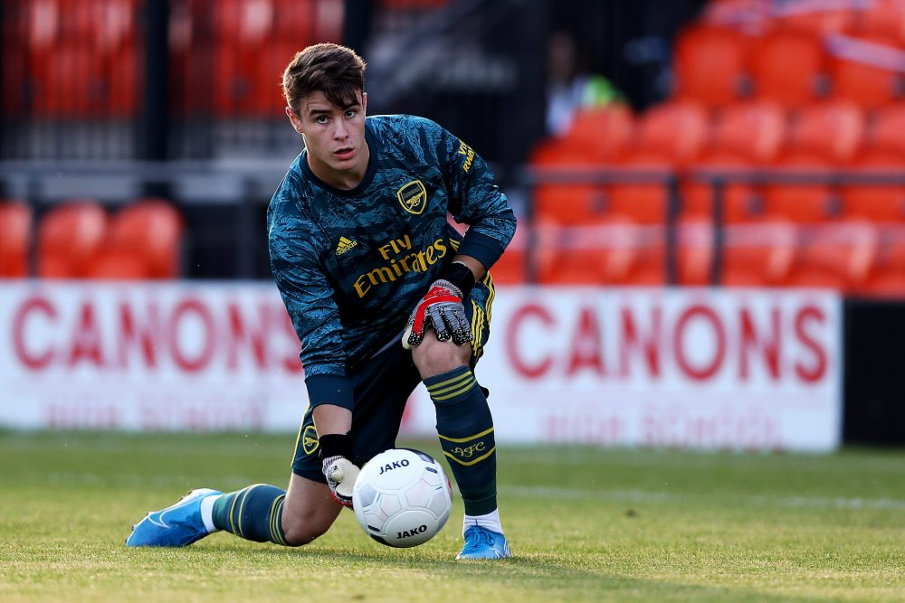

-
Goal.com
McTominay names his top three Manchester United academy talents to watchMason Greenwood leads a trio of hopefuls who, according to the Old Trafford midfielder, could be making a splash in the near future The Manchester United academy is famed for bringing through top talents, and Scott McTominay believes three new graduates could follow his footsteps to stardom. McTominay joined the club's youth system at the age of five, coming up through the ranks until he made his first-team debut under Jose Mourinho at the end of the 2016-17 season. He has since gone on to become a fixture in the United starting line-up, making 27 appearances in all competitions prior to the suspension of activities due to Covid-19, and when asked who was likely to follow in his footsteps, he named a recent Reds revelation and two further hopefuls.
Read more about this
Visit Goal.com -
101 Great Goals
Xherdan Shaqiri among Liverpool trio expected to be moved on this summer – AthleticThe latest speculation stemming from the English media suggests that Liverpool are ready to part with a trio of the club’s out-of-favour players ahead of next season. Liverpool’s struggles Jurgen Klopp’s men have of course enjoyed a historic campaign to date. Before the COVID-19 pandemic brought football in England to a halt, Liverpool had built a staggering 25-point advantage over 2nd-placed Manchester City in the Premier League table. This came with the Merseyside giants having dropped points in just 2 of their 29 league fixtures to this point in the season.
Read more about this
Visit 101 Great Goals -
Football Fancast

Exclusive: Jermain Defoe on his Rangers dream, West Ham exit and leaving Spurs twiceVery few players split opinion between Tottenham and West Ham fans like Jermain Defoe does. For the former, he is a goalscoring hero having scored almost 150 goals across two very successful spells in North London. For the latter, he’s a player who is perceived to have betrayed his roots by trying to leave at a time when the Hammers needed him most. But regardless of all that, the striker has enjoyed a hugely successful career, in which he has scored for every club he’s played for and is currently on a mission to help Rangers win their first SPL title since 2011.
Read more about this
Visit Football Fancast -
The Anfield Wrap
Bundesliga Diaries: Dan Becomes An FC Koln FanIf you heard any of The Anfield Wrap Weekender or Wildcard shows from last week you will have heard me flip flop between saying I don’t care for any other team and tentatively picking one as a result of internal peer pressure. That said, I decided to just watch football, and it was lovely. I watched it with commentary, as background while in the kitchen and with our excellent HotMic commentary on Monday for a little bit. What strikes me most is how important it now is for us to have it in the correct stadium’s if the Premier League returns. There was something to be said for a home advantage without a crowd. It added a formality to the affair in a manner that I can’t quite put my finger on, but I know that if it was taken away it would deeply negate the sense of competition.
Read more about this
Visit The Anfield Wrap -
Daily Cannon

Arsenal renew 19-year-old’s contract after just one seasonHe joined Arsenal as an emergency loan aged 18 before his contract with Reading expired. Hillson was included in Arsenals Europa League A-list for this season as they were ineligible for the B-list. To qualify for the B list, you have to be born on or after 1st January 1998, which both players are. However, you also have to have spent an uninterrupted period of two years with your current club since your 15th birthday. Exclusive story now on @ESPNFC’s transfer blog: #afc agree new contract with goalkeeper James Hillson. Due to train with the first team when group sessions resume but likely to be loaned out next season. Portsmouth & Sunderland, among those interested:
Read more about this
Visit Daily Cannon